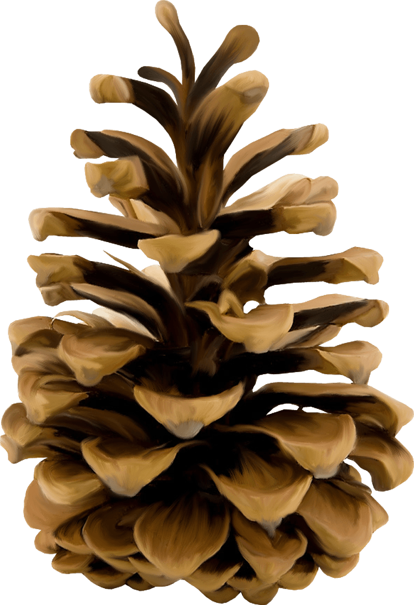
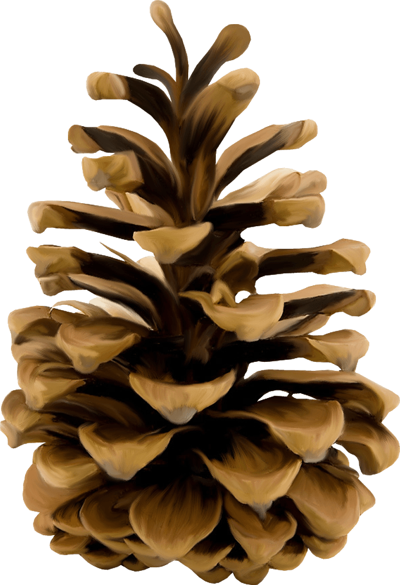
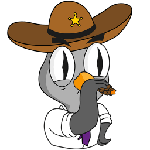
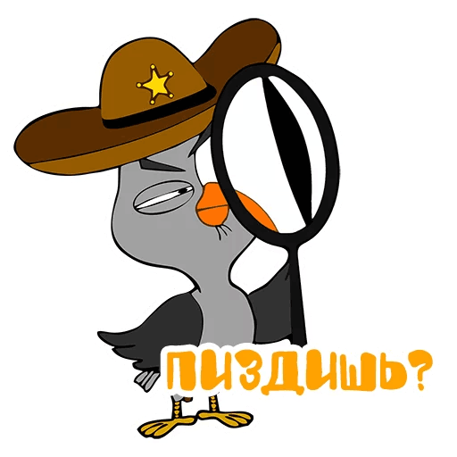
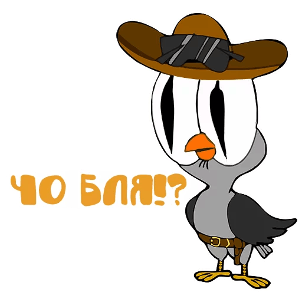
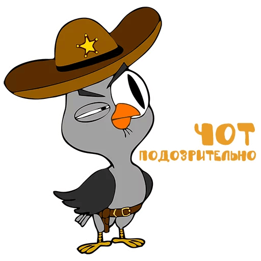
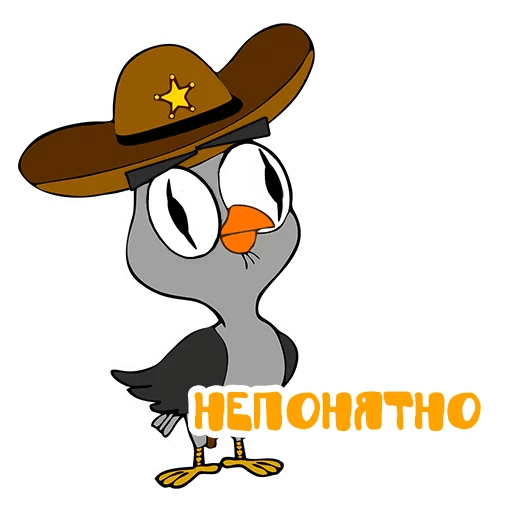

Подозрительная Сова

Немного о Сове
О детстве известно мало. Лишь известно, что родился Сова от Сары Коннор и Совёнка, отправленного взрослым Совой из будущего, дабы спасти маму от посланного Кроколлектором голого Арнольда Шварценеггера. В школе был типичным "чмошником" - усердным в учебе, но из-за прыщей и брекетов не симпатичным внешне и не пользовавшимся авторитетом у сверстников. Из-за этого, красавица Фламинго, в которую он влюбился еще в первом классе, заявила, что ни за что не хочет с ним встречаться.
1 сезон 1 серия
1 сезон 2 серия
Нмншк фтгрфй


